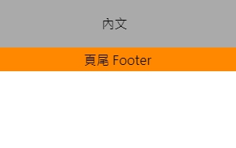
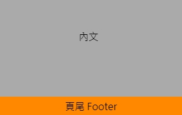

目的
當頁面短時，會因為內容不多而應該保持在頁面最下方頁尾 Footer 區塊向上跑，讓原本每一頁都相同的設計，因為內容的多寡改變；
所以可以用 Sticky Footer 的效果，目的是要保持頁尾 footer 的區塊、列，在瀏覽到頁面內容最後時出現在畫面的最下方，也有提示已經看到最後的用意。
|  |  |
|---|---|
| 沒效果 | 使用效果 |
min-height + margin-bottom
在 HTML 內有 內容 wrapper 和 頁尾 footer 的區塊外，還要在內容加上和頁尾同高度的區塊，以避免內容的文字覆蓋在頁尾的區塊上。
1 | <div class="wrapper"> |
在 CSS 設定
html和body設定 100% 的高和.wrapper的 CSS 屬性min-height一起才會有效果min-height是要確保最小的高度，會因為內容不夠自動拉至 100% 的高margin-bottom的負值是減掉.footer所占的高度，並向上推被減掉的高度，為了總高度不會超過 100%.fixedFooter是為了修正內容文字覆蓋到頁尾的部分，所以要高度要是頁尾的高度或更高才能正確呈現觀看的效果。
1 | html, body { |